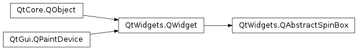
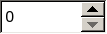

QAbstractSpinBox¶
Inherited by: QDateTimeEdit, QDateEdit, QTimeEdit, QSpinBox, QDoubleSpinBox
Synopsis¶
Functions¶
- def
alignment() - def
buttonSymbols() - def
correctionMode() - def
hasAcceptableInput() - def
hasFrame() - def
initStyleOption(option) - def
interpretText() - def
isAccelerated() - def
isGroupSeparatorShown() - def
isReadOnly() - def
keyboardTracking() - def
lineEdit() - def
setAccelerated(on) - def
setAlignment(flag) - def
setButtonSymbols(bs) - def
setCorrectionMode(cm) - def
setFrame(arg__1) - def
setGroupSeparatorShown(shown) - def
setKeyboardTracking(kt) - def
setLineEdit(edit) - def
setReadOnly(r) - def
setSpecialValueText(txt) - def
setWrapping(w) - def
specialValueText() - def
text() - def
wrapping()
Virtual functions¶
- def
clear() - def
fixup(input) - def
stepBy(steps) - def
stepEnabled() - def
validate(input, pos)
Signals¶
- def
editingFinished()
Detailed Description¶
The
PySide2.QtWidgets.QAbstractSpinBoxclass provides a spinbox and a line edit to display values.The class is designed as a common super class for widgets like
PySide2.QtWidgets.QSpinBox,PySide2.QtWidgets.QDoubleSpinBoxandPySide2.QtWidgets.QDateTimeEditHere are the main properties of the class:
PySide2.QtWidgets.QAbstractSpinBox.text(): The text that is displayed in thePySide2.QtWidgets.QAbstractSpinBox.- alignment : The alignment of the text in the
PySide2.QtWidgets.QAbstractSpinBox.PySide2.QtWidgets.QAbstractSpinBox.wrapping(): Whether thePySide2.QtWidgets.QAbstractSpinBoxwraps from the minimum value to the maximum value and vica versa.
PySide2.QtWidgets.QAbstractSpinBoxprovides a virtualPySide2.QtWidgets.QAbstractSpinBox.stepBy()function that is called whenever the user triggers a step. This function takes an integer value to signify how many steps were taken. E.g. PressingQt.Key_Downwill trigger a call toPySide2.QtWidgets.QAbstractSpinBox.stepBy()(-1).
PySide2.QtWidgets.QAbstractSpinBoxalso provide a virtual functionPySide2.QtWidgets.QAbstractSpinBox.stepEnabled()to determine whether stepping up/down is allowed at any point. This function returns a bitset ofStepEnabled.
-
class
PySide2.QtWidgets.QAbstractSpinBox([parent=nullptr])¶ Parameters: parent – PySide2.QtWidgets.QWidgetConstructs an abstract spinbox with the given
parentwith defaultPySide2.QtWidgets.QAbstractSpinBox.wrapping(), and alignment properties.
-
PySide2.QtWidgets.QAbstractSpinBox.StepEnabledFlag¶ Constant Description QAbstractSpinBox.StepNone QAbstractSpinBox.StepUpEnabled QAbstractSpinBox.StepDownEnabled
-
PySide2.QtWidgets.QAbstractSpinBox.ButtonSymbols¶ This enum type describes the symbols that can be displayed on the buttons in a spin box.


Constant Description QAbstractSpinBox.UpDownArrows Little arrows in the classic style. QAbstractSpinBox.PlusMinus + and - symbols. QAbstractSpinBox.NoButtons Don’t display buttons. See also
-
PySide2.QtWidgets.QAbstractSpinBox.CorrectionMode¶ This enum type describes the mode the spinbox will use to correct an
Intermediatevalue if editing finishes.Constant Description QAbstractSpinBox.CorrectToPreviousValue The spinbox will revert to the last valid value. QAbstractSpinBox.CorrectToNearestValue The spinbox will revert to the nearest valid value.
-
PySide2.QtWidgets.QAbstractSpinBox.alignment()¶ Return type: PySide2.QtCore.Qt.Alignment
Return type: PySide2.QtWidgets.QAbstractSpinBox.ButtonSymbols
-
PySide2.QtWidgets.QAbstractSpinBox.clear()¶ Clears the lineedit of all text but prefix and suffix.
-
PySide2.QtWidgets.QAbstractSpinBox.correctionMode()¶ Return type: PySide2.QtWidgets.QAbstractSpinBox.CorrectionMode
-
PySide2.QtWidgets.QAbstractSpinBox.editingFinished()¶
-
PySide2.QtWidgets.QAbstractSpinBox.fixup(input)¶ Parameters: input – unicode This virtual function is called by the
PySide2.QtWidgets.QAbstractSpinBoxif theinputis not validated toQValidator.Acceptablewhen Return is pressed orPySide2.QtWidgets.QAbstractSpinBox.interpretText()is called. It will try to change the text so it is valid. Reimplemented in the various subclasses.
-
PySide2.QtWidgets.QAbstractSpinBox.hasAcceptableInput()¶ Return type: PySide2.QtCore.bool
-
PySide2.QtWidgets.QAbstractSpinBox.hasFrame()¶ Return type: PySide2.QtCore.bool
-
PySide2.QtWidgets.QAbstractSpinBox.initStyleOption(option)¶ Parameters: option – PySide2.QtWidgets.QStyleOptionSpinBoxInitialize
optionwith the values from thisPySide2.QtWidgets.QSpinBox. This method is useful for subclasses when they need aPySide2.QtWidgets.QStyleOptionSpinBox, but don’t want to fill in all the information themselves.See also
-
PySide2.QtWidgets.QAbstractSpinBox.interpretText()¶ This function interprets the text of the spin box. If the value has changed since last interpretation it will emit signals.
-
PySide2.QtWidgets.QAbstractSpinBox.isAccelerated()¶ Return type: PySide2.QtCore.bool
-
PySide2.QtWidgets.QAbstractSpinBox.isGroupSeparatorShown()¶ Return type: PySide2.QtCore.bool
-
PySide2.QtWidgets.QAbstractSpinBox.isReadOnly()¶ Return type: PySide2.QtCore.bool
-
PySide2.QtWidgets.QAbstractSpinBox.keyboardTracking()¶ Return type: PySide2.QtCore.bool
-
PySide2.QtWidgets.QAbstractSpinBox.lineEdit()¶ Return type: PySide2.QtWidgets.QLineEditThis function returns a pointer to the line edit of the spin box.
-
PySide2.QtWidgets.QAbstractSpinBox.selectAll()¶ Selects all the text in the spinbox except the prefix and suffix.
-
PySide2.QtWidgets.QAbstractSpinBox.setAccelerated(on)¶ Parameters: on – PySide2.QtCore.bool
-
PySide2.QtWidgets.QAbstractSpinBox.setAlignment(flag)¶ Parameters: flag – PySide2.QtCore.Qt.Alignment
-
PySide2.QtWidgets.QAbstractSpinBox.setButtonSymbols(bs)¶ Parameters: bs – PySide2.QtWidgets.QAbstractSpinBox.ButtonSymbols
-
PySide2.QtWidgets.QAbstractSpinBox.setCorrectionMode(cm)¶ Parameters: cm – PySide2.QtWidgets.QAbstractSpinBox.CorrectionMode
-
PySide2.QtWidgets.QAbstractSpinBox.setFrame(arg__1)¶ Parameters: arg__1 – PySide2.QtCore.bool
-
PySide2.QtWidgets.QAbstractSpinBox.setGroupSeparatorShown(shown)¶ Parameters: shown – PySide2.QtCore.bool
-
PySide2.QtWidgets.QAbstractSpinBox.setKeyboardTracking(kt)¶ Parameters: kt – PySide2.QtCore.bool
-
PySide2.QtWidgets.QAbstractSpinBox.setLineEdit(edit)¶ Parameters: edit – PySide2.QtWidgets.QLineEditSets the line edit of the spinbox to be
lineEditinstead of the current line edit widget.lineEditcan not be 0.PySide2.QtWidgets.QAbstractSpinBoxtakes ownership of the newPySide2.QtWidgets.QAbstractSpinBox.lineEdit()If
QLineEdit.validator()for thelineEditreturns 0, the internal validator of the spinbox will be set on the line edit.
-
PySide2.QtWidgets.QAbstractSpinBox.setReadOnly(r)¶ Parameters: r – PySide2.QtCore.bool
-
PySide2.QtWidgets.QAbstractSpinBox.setSpecialValueText(txt)¶ Parameters: txt – unicode
-
PySide2.QtWidgets.QAbstractSpinBox.setWrapping(w)¶ Parameters: w – PySide2.QtCore.bool
-
PySide2.QtWidgets.QAbstractSpinBox.specialValueText()¶ Return type: unicode
-
PySide2.QtWidgets.QAbstractSpinBox.stepBy(steps)¶ Parameters: steps – PySide2.QtCore.intVirtual function that is called whenever the user triggers a step. The
stepsparameter indicates how many steps were taken. For example, pressingQt::Key_Downwill trigger a call tostepBy(-1), whereas pressingQt::Key_PageUpwill trigger a call tostepBy(10).If you subclass
QAbstractSpinBoxyou must reimplement this function. Note that this function is called even if the resulting value will be outside the bounds of minimum and maximum. It’s this function’s job to handle these situations.
-
PySide2.QtWidgets.QAbstractSpinBox.stepDown()¶ Steps down by one linestep Calling this slot is analogous to calling
PySide2.QtWidgets.QAbstractSpinBox.stepBy()(-1);
-
PySide2.QtWidgets.QAbstractSpinBox.stepEnabled()¶ Return type: PySide2.QtWidgets.QAbstractSpinBox.StepEnabledVirtual function that determines whether stepping up and down is legal at any given time.
The up arrow will be painted as disabled unless ( &
StepUpEnabled) != 0.The default implementation will return (
StepUpEnabled|StepDownEnabled) if wrapping is turned on. Else it will returnStepDownEnabledif value is > minimum() or’ed withStepUpEnabledif value < maximum().If you subclass
PySide2.QtWidgets.QAbstractSpinBoxyou will need to reimplement this function.
-
PySide2.QtWidgets.QAbstractSpinBox.stepUp()¶ Steps up by one linestep Calling this slot is analogous to calling
PySide2.QtWidgets.QAbstractSpinBox.stepBy()(1);
-
PySide2.QtWidgets.QAbstractSpinBox.text()¶ Return type: unicode
-
PySide2.QtWidgets.QAbstractSpinBox.validate(input, pos)¶ Parameters: - input – unicode
- pos –
PySide2.QtCore.int
Return type: PyObject
This virtual function is called by the
PySide2.QtWidgets.QAbstractSpinBoxto determine whetherinputis valid. Theposparameter indicates the position in the string. Reimplemented in the various subclasses.
-
PySide2.QtWidgets.QAbstractSpinBox.wrapping()¶ Return type: PySide2.QtCore.bool
© 2018 The Qt Company Ltd. Documentation contributions included herein are the copyrights of their respective owners. The documentation provided herein is licensed under the terms of the GNU Free Documentation License version 1.3 as published by the Free Software Foundation. Qt and respective logos are trademarks of The Qt Company Ltd. in Finland and/or other countries worldwide. All other trademarks are property of their respective owners.